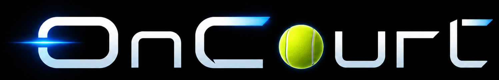

Daily Fan Briefing
Your personal tournament desk
Choose players below to build your personal feed.
Match Radar
No followed matches yet
Follow a player to see what is coming next.
Personal Feed

Daily Fan Briefing
Choose players below to build your personal feed.
Match Radar
Follow a player to see what is coming next.
Personal Feed